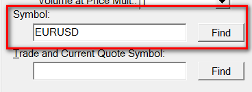

Changing the Symbol of a Chart
- Introduction
- Changing the Symbol of a Chart or Trade DOM Through Chart Settings
- Quickly Changing the Symbol of a Chart to a Symbol for which a Data File Exists
- Quickly Changing the Symbol of a Chart to a New Symbol for which a Data File Does Not Exist
- Clearing Character Input Buffer
- Preventing Accidental Symbol Changes to Chart
- Using the Associated Watch List
- Combining the Associated Watch List with Chart Linking
- Moving through the Symbols in the Associated Watch List
- Scanning
- Watch List Mode
- Automatically Rolling over Futures Symbols in Watch List
- Using Compact Associated Watch List on Control Bar for Chart or Trade DOM
- Exporting a List of Symbols
- Importing a List of Symbols
- Downloading Historical Daily Data for Symbols List
- Downloading Historical Intraday Data for Symbols List
- Automatically Inserting Symbols for Exchange or Index
- Changing Multiple Charts Symbols
- Programmatically Changing Symbol of a Chart
- Other methods to Change the Symbol of a Chart
Introduction
Within a chart you can change to a different symbol. This feature lets you change to any symbol in the chart and keep all the existing chart settings and studies the same.
Data for each symbol is stored in its own chart data file. These files are located in the Data Files Folder. Select Global Settings >> General Settings to see the location of the Data Files Folder.
Trading DOM windows: All of the methods described on this page to change the symbol of the chart, also apply to Trade DOMs as well.
Changing the Symbol of a Chart or Trade DOM Through Chart Settings
{kind=link}
The method described in this section is the simplest method of changing the Symbol of a chart or Trade DOM. As with any of the methods described on this page, the existing settings and studies in the chart will be preserved after changing the symbol. Although the Tick Size, Price Display Format and Session Times can change to correspond to the new symbol.
Select Chart >> Chart Settings on the menu. In the Symbol box type the symbol you want to change the chart to.
If you are not sure what the symbol is or to look up the symbol, press the Find button to choose one from a list. In the case of futures contracts, it is always recommended to use the Find button to select the symbol.
For some services, you may need to use the Get Symbols button to actually request and list the symbols. In this case, refer to Getting Symbols for instructions.
When done, press the OK button.
A new chart data file will be created for the entered symbol if you have not previously requested the symbol before.
If you find that the symbol changes to the following contract month as compared to the contract month you selected or entered, then disable the Automatically Rollover Futures Symbol option.
Futures: For instructions to change the symbol of a chart to a new futures contract month and include the data from prior futures contracts, refer to the Continuous Futures Contract page.
Quickly Changing the Symbol of a Chart to a Symbol for which a Data File Exists
The instructions in this section explain how to change the symbol of a chart to a symbol which there is already a data file existing for that symbol.
You will have a data file for a symbol if you previously opened a chart for that symbol.
- Make a chart window active if it is not already by clicking on its title bar with your Pointer.
- Optional: Press the Escape (Esc) key on your keyboard to clear the character input buffer. The character input buffer could be holding mistakenly entered keystrokes which will affect the symbol entry. You can see what is in the character input buffer by looking at the title bar of the chart. The typed characters are displayed on the title bar.
- For this feature to work, you need to have the option Global Settings >> General Settings >> Support Symbol Entry from Chart Window enabled. You may want to disable this option to prevent accidentally modifying the symbol of a chart from inadvertent pressing of keys on the keyboard.
- Type a complete symbol or partial symbol into the active chart window and press the Enter key on the keyboard. This will load the first symbol that there is a data file for that matches the entered symbol. The window captures the keystrokes as you type them. There is no specific place on the chart you need to type them. The keystrokes will be displayed in the title bar of the window.
- For example, you can type: IBM and press the Enter key on the keyboard to change to the symbol IBM. Or for example, you can type: IB and press the Enter key to change to the symbol IBM assuming you do not have a data file for IB.
Quickly Changing the Symbol of a Chart to a New Symbol for which a Data File Does Not Exist
To quickly change the symbol of a chart to a new symbol for which a data file does not exist, follow these instructions:
- Activate the chart by clicking on its title bar or anywhere on the chart.
- Type a slash (/) followed by the symbol, and press the Enter key on your keyboard. Example: /ESH16.
- The chart window captures the keystrokes as you type them. There is no specific place on the chart you need to type them. The keystrokes will be displayed in the title bar of the window.
- For this feature to work, you need to have the option Global Settings >> General Settings >> Support Symbol Entry from Chart Window enabled. You may want to disable this option to prevent accidentally modifying the symbol of a chart from inadvertent pressing of keys on the keyboard.
Clearing Character Input Buffer
The following 2 features use the character input buffer for the chart:
Changing The Symbol of a Chart or Trade DOM
Quickly Changing the Symbol of a Chart to a Symbol for which a Data File Exists
As you type keys from the keyboard you will see the characters appear on the top of the chart window. Refer to the below image.
{kind=link}
To clear the character input buffer from keys pressed from the keyboard and are displayed on the title bar of a chart, simply press the Escape (Esc) key on your keyboard.
Preventing Accidental Symbol Changes to Chart
To prevent accidentally changing the symbol of a chart by inadvertent character entry from your keyboard, disable Global Settings >> General Settings >> Charts >> Symbol >> Support Symbol Entry from Chart Window.
Using the Associated Watch List
The Associated Watch List will allow you to select or cycle among multiple symbols within a chart or Trade DOM. This allows you to maintain the same Chart Settings and studies for all of the symbols in the Watch List.
{kind=link}
All of the current settings for the chart window or Trade DOM will stay the same except for the settings which relate specifically for the symbol. Before you can use the Associated Watch List, you must add symbols to the Associated Watch List for the chart. Each chart window or Trade DOM has its own Associated Watch List.
- Select Chart >> Associated Watch List on the menu.
- If the Associated Watch/Symbol List window does not appear, then select Chart >> Reset Child Windows and it should appear. If necessary open it again with Chart >> Associated Watch List.
- Press the Add button.
- Type the symbol in the Symbol text box you wish to add. Press Add before entering each symbol. Use the Find button to choose among the available symbols for the Data or Trading service you are using.
- Enable the Watch List Mode option on the Associated Watchlist window to cause the symbol of the chart to immediately change to the selected symbol.
- Select File >> Save on the menu to save your Chartbook, so that the Associated Watch List will be saved.
- Remember that each Associated Watch List is associated with a particular chart. If you have closed the Watch List window and you want to open it again, go to the chart and select Chart >> Associated Watch List on the menu. You can also add a Control Bar button for this command.
Each chart has its own Associated Watch List. When you open the Associated Watch List you will see the associated chart name on the title bar.
The Associated Watch List can be opened by using a Control Bar button for quick access. To do this, select Global Settings >> Customize Control Bars >> Control Bar 1-8. In the in the Available Control Bar Commands list, go to the Chart sub list and Add the Associated Watch List command to the Control Bar.
Combining the Associated Watch List with Chart Linking
You may want to have several charts linked by symbol, so when you use the Associated Watch List on one of these charts, the other charts will change to the same symbol. For additional information, refer to Chart Linking on the Chart Settings page.
Moving through the Symbols in the Associated Watch List
Once the Associated Watch List is setup, make sure the option Chart >> Only Symbols in Watch List on the menu is checked. Otherwise, in the case of an Intraday chart you will instead move through all of the Intraday data files that are in the Data Files Folder.
And in the case of a Historical chart, you will instead move through all of the Historical chart data files that are in the Data Files Folder.
Use the + and - keys on your keyboard to change the symbol displayed in the chart to the next or previous symbol in the Associated Watch List, respectively.
There are also the Chart >> Next File and Chart >> Previous File menu commands which will move to the next or previous file in the Associated Watch List if Chart >> Only Symbols in Watch List on the menu is checked.
Otherwise, if this option is not checked, these menu commands will move to the next or previous data files in the Data Files Folder.
You are also able to add Control Bar buttons for these commands to move to the Next or Previous symbols. This will allow you to use Control Bar buttons to move to the Next or Previous symbol.
Another method you can use is to move through the open chart windows within the visible chartbook. This can be done using the F4 ( Window >>Previous Chart) key on your keyboard and the F9 ( Window >>Next Chart) key. These particular shortcut keys need to be set up, if they are not already, through Global Settings >> Customize Keyboard Shortcuts.
Scanning
It is possible to scan through the symbols in the Associated Watch List. This is useful to evaluate Simple Alert Formulas you have set on the studies on the chart or through Chart >> Chart Settings >> Alerts. Or to evaluate the Spreadsheet formulas when using the Spreadsheet System/Alert study.
These formulas will provide alert signals. The Chart >> Start Scan command will cause the chart to cycle through all symbols in the Associated Watch List.
However, if the Chart >> Only Symbols in Watch List option is not checked, this will cause the chart to cycle through the symbols, based on chart type, you have a data file for in the Data Files Folder. The Chart >> Stop Scan command will stop the chart from scanning.
Scanning is also a method by which you can perform historical Intraday chart data downloads for the symbols in the list when the chart is an Intraday chart.
For complete instructions, refer to Scan Menu Commands.
Watch List Mode
On the Chart >> Associated Watch List window you can enable the Watch List Mode option.
When this is enabled, simply click on a symbol in the list to change the chart immediately to that symbol.
If you have used one of the Drawing Tools on the chart, make sure that Chart >> Chart Settings >> Chart Drawings >> Show Chart Drawings for Different Symbols is disabled to prevent Chart Drawings for other symbols from displaying on the chart for a different symbol that you have changed to from the Associated Symbol List.
Automatically Rolling over Futures Symbols in Watch List
Futures symbols in the Watch List can be automatically rolled over as they are used in the chart by setting Chart >> Chart Settings >> Symbol >> Automatically Rollover Futures Symbol to Yes.
When the symbol of the chart is changed to an expired Watch List symbol and this option is enabled, the symbol will be updated to the current symbol. The future symbol in the Watch List will still remain the same.
You can also rollover the symbols, within the Watch List window itself by going to the Watch List window and selecting Symbols >> Rollover Expired Futures Symbols. Only those symbols which are fully expired will be rolled over to the current contract. If they are not expired, they will not be rolled over.
Using Compact Associated Watch List on Control Bar for Chart or Trade DOM
A compact symbol drop-down list containing the same symbols from the Associated Watch List for a Chart or Trade DOM can be added to a Control Bar.
For a detached Chart or Trade DOM, a Control Bar can be added to those.
Follow the instructions below.
- In the case of the main Sierra Chart window, if the Control Bar is not already displayed, then select Window >> Control Bars >> Control Bar #. Where the # equals the particular Control Bar you want to display. This can be 1-8. Make sure there is a Checkmark by that menu command indicating the Control Bar is displayed. For more details, refer to Control Bars >> Control Bar [1-8].
- In the case of a detached Chart or Trade DOM, if the Control Bar is not already displayed, then select Window >> Control Bars >> Control Bar #. Where the # equals the particular Control Bar you want to display. This can be 1-8. Make sure there is a Checkmark by that menu command indicating the Control Bar is displayed. For more details, refer to Control Bars >> Control Bar [1-8].
- Select Global Settings >> Customize Control Bars >> Control Bar 1-8 depending upon what particular Control Bar you want to add the Watch List control to. This will be the Control Bar you have added to the Sierra Chart main window or to a detached Chart/Trade DOM.
- In the Available Control Bar Commands list, go to Special Items.
- Select the Watch List item. It will not be there in the list if it is already on the Control Bar. If it is listed, then press the Add button.
- It will now be listed on the Selected Control Bar Commands list. Use the Move Up or Move Down buttons to position it where you require.
- Press OK.
- You will now see the Watch List displayed on the Control Bar. Refer to the image below.
- Select from the list Edit Watch List to add symbols to the list.
- Select a symbol from the Watch List on the Control Bar to change the active Chart or Trade DOM to that symbol.
{kind=link}
{kind=link}
The Symbol/Watch List on a Control Bar in the case of when the chart is set to a futures contract symbol, will also list the forward contract months for that chart futures contract symbol. It will list those symbols in addition to the symbols in the Associated Watch List for the chart.
Exporting a List of Symbols
Follow the instructions below to export the list of symbols in the Associated Watch List window to a text file.
- Open the Associated Watch List window by going to the chart and selecting Chart >> Associated Watch List.
- Press the Export button. This button will only be enabled if there is at least one or more symbols in the list.
- In the File Name box, enter a name that you want to save the list of symbols as. By default it will have a SymbolList file extension. There is no need to type that extension. It will be automatically added.
- Press the Save button to save the list of files.
Importing a List of Symbols
It is possible to import a list of symbols from a plain text file into the Associated Watch List. Each symbol needs to be on its own line in this file.
When importing a list of symbols, they are added to the existing list. Existing symbols will remain in the list.
This feature is especially useful if you have a long or complex list of symbols. Follow the steps below.
- The first step is to create the list of symbols in a text file. To create this text file, use an editor like the Notepad++ editor supplied with Sierra Chart. This is in the NPP subfolder within the folder that Sierra Chart is installed to on your system. Enter each symbol on its own line in the file. The last line in the file needs to be blank in order to properly import the last symbol. If the last symbol is not importing, then ensure there is an Enter placed after the last symbol creating a blank line at the end of the file.
- Save the file to the Sierra Chart Data Files Folder. The location of this folder can be determined through Global Settings >> General Settings >> Data Files Folder.
- Open the Associated Watch List by selecting Chart >> Associated Watch List.
- Press the Import button.
- Locate your text file you created in the prior step, select it, and press Open. The list of symbols will now be imported.
- The existing symbols will still remain in the list and duplicates will be ignored when the file is imported.
Downloading Historical Daily Data for Symbols List
Follow the instructions below to download Historical Daily data for a list of symbols in the Associated Watch List.
- Open a Historical Daily chart if one is not already open. Refer to Opening Charts.
- Follow the instructions to use the Associated Watch List and add symbols to it.
- Select Edit >> Download Daily Data for Associated Watch List Symbols.
- After the historical data download is complete for all of the symbols, you can then select the symbols in the Associated Watch List and they will already be up-to-date with the latest data.
Downloading Historical Intraday Data for Symbols List
Follow the instructions below to download Historical Intraday data for a list of symbols in the Associated Watch List.
- Open a Intraday chart if one is not already open. Refer to Opening Charts. If one is already open, go to that Intraday chart.
- Follow the instructions to use the Associated Watch List and add the symbols you want historical Intraday data for.
- Enable Global Settings >> General Settings >> General >> Data >> Subscribe Real Time (RT) Data and Download Historical Data During Scan.
- Enable Chart >> Only Symbols in Watch List.
- Select Chart >> Start Scan. The symbol of the chart will be changed to each symbol one at a time and historical Intraday data will be downloaded for the symbols.
Automatically Inserting Symbols for Exchange or Index
It is supported to automatically insert into the Associated Watch List, symbols for a supported Exchange or Index.
- Open a new chart or go to an existing chart.
- Select Chart >> Associated Watch List.
- Press the Remove All button to clear the existing symbols from the list.
- From the Symbols menu, select a particular Exchange or Index you want to add the symbols for to the list.
Changing Multiple Charts Symbols
To automatically change the symbols on multiple charts at one time, or to create a Chartbook with a specific set of charts with specific symbols, follow these instructions:
- Open or switch to the desired Chartbook that contains the charts for which you want to change the symbols. Or, create a new Chartbook and then open a single chart.
- Open the Associated Watch List and add the desired symbols to the list using the Add button. Use the Find button to display a list of the available symbols. Alternatively, use the Import button to import a pre-defined list of symbols.
- On the Associated Watch List window select Symbols >> Set Charts to Symbols.
- You will receive a Add Additional Charts prompt. Press Yes to open additional charts as required to match the number of symbols in the Associated Symbols/Watch List. Or press No, to not.
- The charts in the Chartbook will be updated to the list of symbols in the Watch List. Additional charts will be opened as needed if you pressed yes in response to Add Additional Charts.
Otherwise, if there are fewer charts than the number of symbols, then only the symbols that can fit into the charts will be updated. If there are more charts than the number of symbols, then the remaining charts after the symbols have been updated will not change from the symbol they originally had.
Programmatically Changing Symbol of a Chart
It is possible to programmatically change the symbol of a chart through the Advanced Custom Study Interface and Language.
Refer to sc.DataFile for complete documentation.
Other Methods to Change the Symbol of a Chart
Another method to change the symbol of a chart is through the Chart Linking feature by setting the same link number for two or more charts and enabling the Chart Linking >> Symbol option in Chart >> Chart Settings. For complete documentation, refer to Chart Linking.
Another method to change the symbol of a chart is through the File >> Find Symbol >> Change Chart Symbol command.
Another method to change the symbol of a chart is through Quote Boards.
*Last modified Monday, 17th April, 2023.